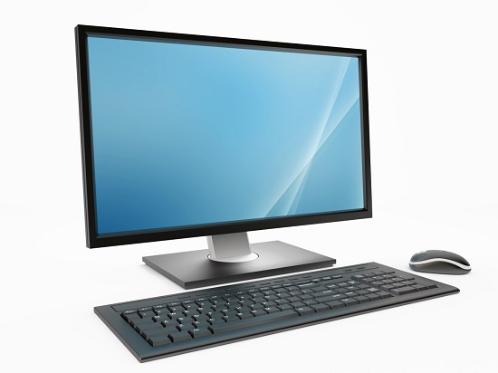
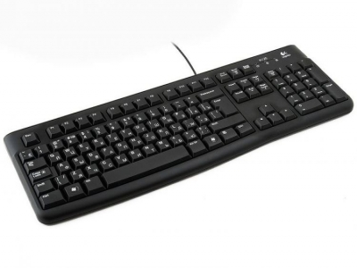
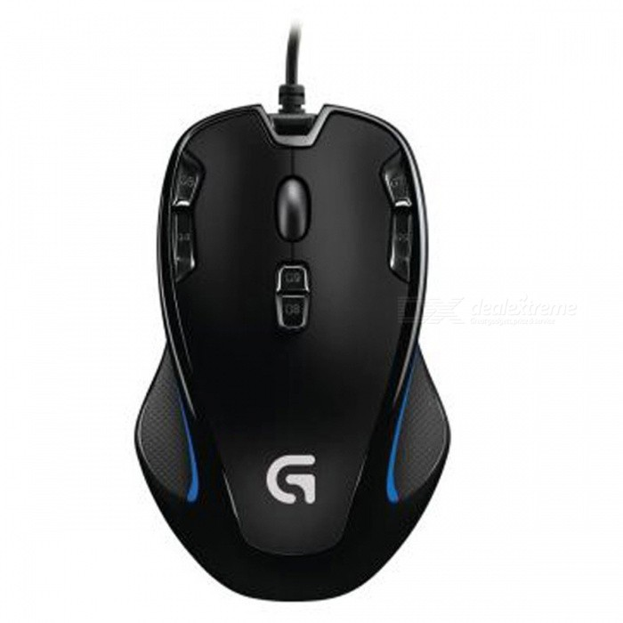

На этом сайте вы сможете найти различную информацию о компьютере, его программном обеспечении и ценах на компьютерные комплектующие

Компьютерная клавиатура — устройство, позволяющее пользователю вводить текстовую информацию в компьютер (устройство ввода).

Компьютерная мышь – это устройство, с помощью которого можно выбирать какие-либо объекты на экране компьютера и управлять ими. Представляет собой небольшую пластмассовую подушечку, на которую кладется кисть руки. Обычно имеет две плоские кнопки и небольшое колесико между ними.
